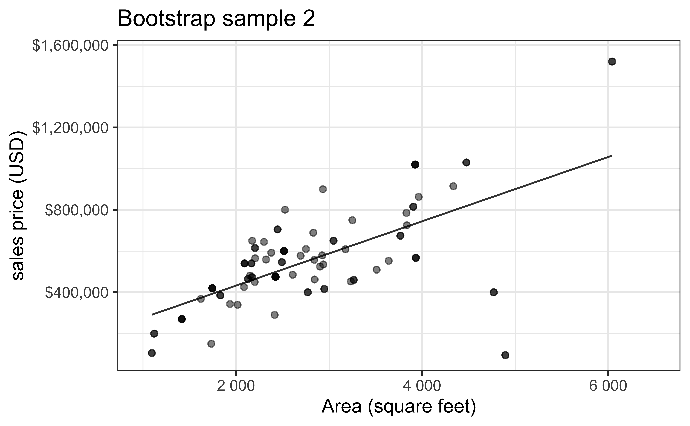
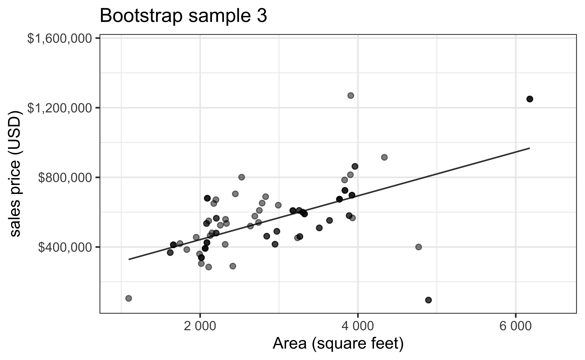
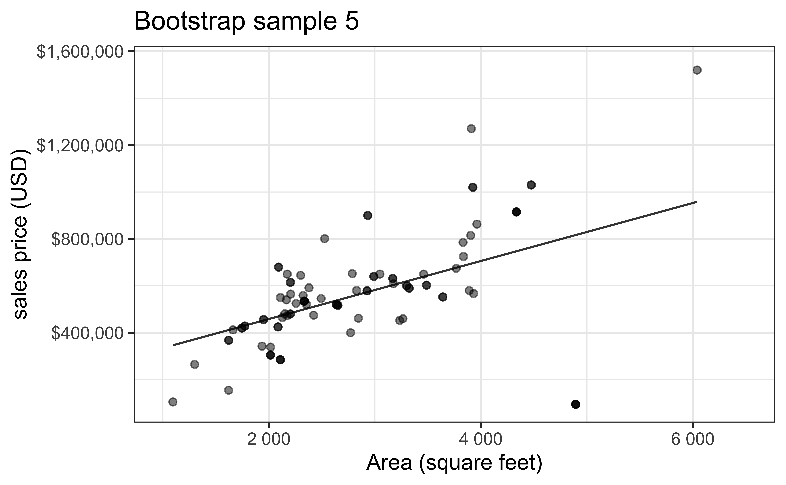
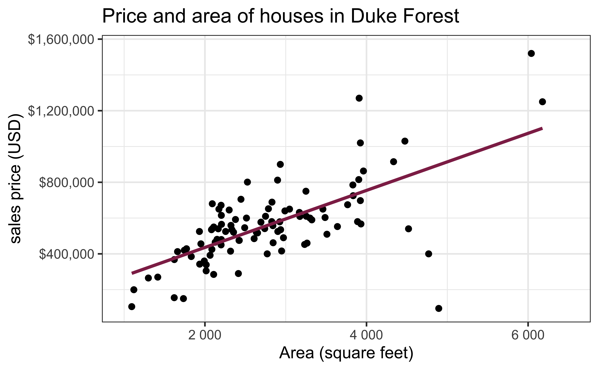

# load packages
library(tidyverse) # for data wrangling and visualization
library(tidymodels) # for modeling
library(openintro) # for Duke Forest dataset
library(scales) # for pretty axis labels
library(glue) # for constructing character strings
library(knitr) # for neatly formatted tables
library(kableExtra) # also for neatly formatted tablesf
# set default theme and larger font size for ggplot2
ggplot2::theme_set(ggplot2::theme_bw(base_size = 16))SLR: Simulation-based inference
Bootstrap confidence intervals for the slope
January 20, 2026
Data: Houses in Duke Forest
- Data on houses that were sold in the Duke Forest neighborhood of Durham, NC around November 2020
- Scraped from Zillow
- Source:
openintro::duke_forest

Goal: Use the area (in square feet) to understand variability in the price of houses in Duke Forest.
Statistical inference
Statistical inference provides methods and tools so we can use the single observed sample to make valid statements (inferences) about the population it comes from
For our inferences to be valid, the sample should be representative (ideally random) of the population we’re interested in

Bootstrap sample 1


Bootstrap sample 2


Bootstrap sample 3


Bootstrap sample 4


Bootstrap sample 5


so on and so forth…
Bootstrap samples 1 - 5


Bootstrap samples 1 - 100


Slopes of bootstrap samples
Fill in the blank: For each additional square foot, the model predicts the sales price of Duke Forest houses to be higher, on average, by $159, plus or minus ___ dollars.

Slopes of bootstrap samples
Fill in the blank: For each additional square foot, we expect the sales price of Duke Forest houses to be higher, on average, by $159, plus or minus ___ dollars.

Bootstrap distribution
Let’s increase the number of bootstrap samples to 1000. The bootstrap sampling distribution is the distribution of estimated slopes given samples of size \(n\) (the same as our data).

Confidence level
How confident are you that the true slope is between $0 and $250? How about $150 and $170? How about $90 and $210?

Precision vs. accuracy
If we want to be very certain that we capture the population parameter, should we use a wider or a narrower interval? What drawbacks are associated with using a wider interval?